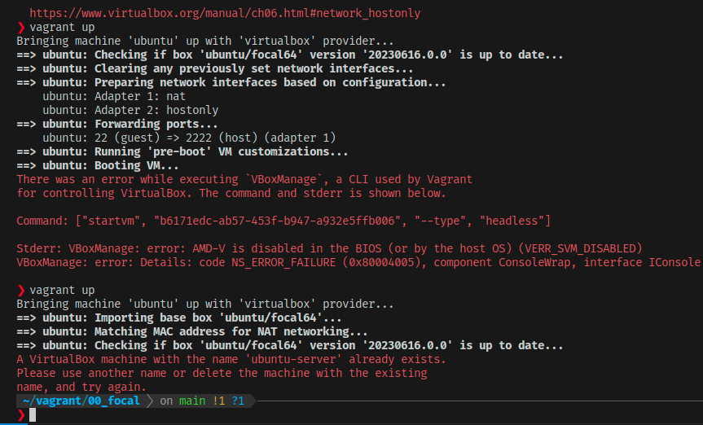
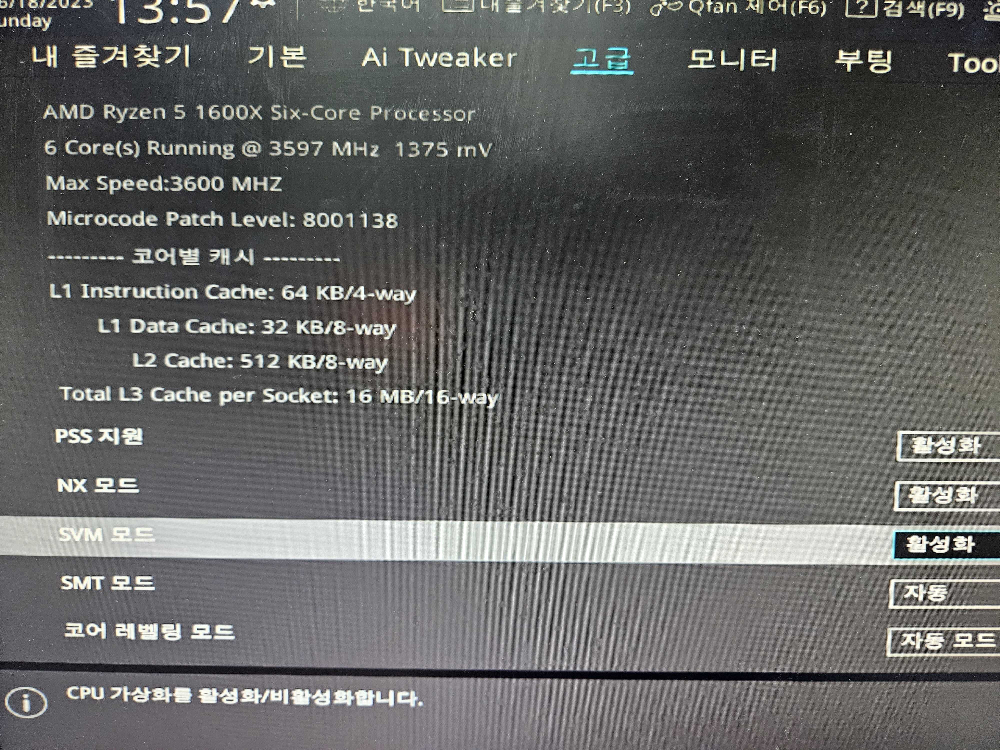
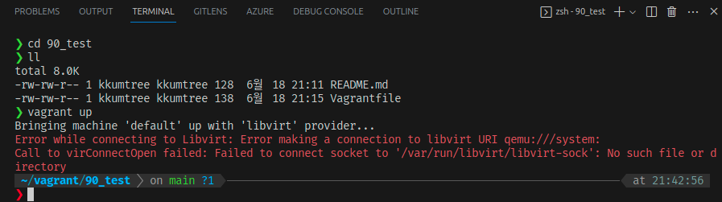
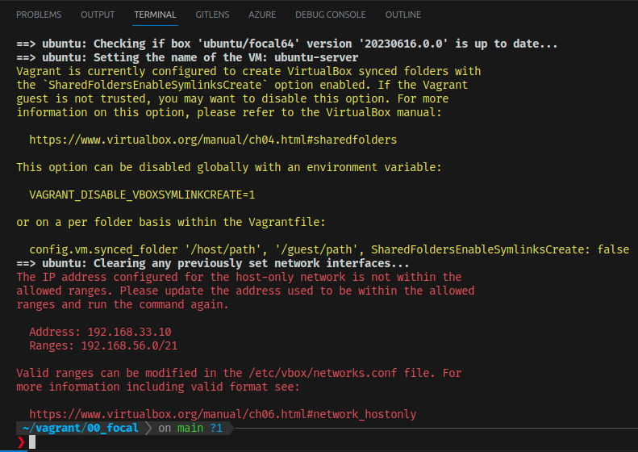

Ubuntu 23.04 (Host OS)에서 간단하게 Vagrant 사용을 해보고, VBox가 아닌 Docker를 Provider로 지정하여 사용해본다.
- WSL2 환경에서는 Vagrant가 의도한대로 작동하지 않으므로 유의: 별도의 설정 필요
Vagrant 설치
- Ubuntu 22.04 LTS 및 23.10 기준, APT repo를 통한 설치 지원
sudo apt-get install vagrant
VBox 설치(사용 시)
- CPU 가상화 기술 활성화 필요(BIOS단, AMD의 경우는 SVM, Intel의 경우는 VT-x)


- virtualbox-ext-pack(선택): USB 2.0/3.0 지원 등의 확장 기능을 사용하려면 설치
- 개인용도의 제한적 라이선스(동의를 위한 대화창 확인)
- 확장기능을 쓸 필요가 없기 때문에 설치하지 아니함
sudo apt-get install virtualbox
# sudo apt-get install virtualbox-ext-pack
Docker 설치(사용 시)
- Ubuntu 기준, 아래 3가지 설치 방법이 있으므로, 친숙한 모드로 진행
sudo snap install docker # 최신버전
sudo apt-get install docker.io
sudo apt-get install podman-docker
- Docker 권한 부여: 라이브 서비스 시 권한 유의 (Docker Docs)
- Docker 그룹에 현재 사용자 추가
- Docker 그룹에 속한 사용자는 sudo 없이도 Docker 사용 가능
sudo addgroup --system docker
sudo adduser $USER docker
newgrp docker
- (참고) Docker 공식 Docs에 서술된 Docker Engine 설치 방법
- Docker Docs: Install Docker Engine on Ubuntu
Vagrantfile 생성
VBox 사용 시
- Snippet: Gist
- CPU: 1Core / RAM: 1024MB
# -*- mode: ruby -*-
# vi: set ft=ruby :
Vagrant.configure("2") do |config|
config.vm.box = "ubuntu/focal64"
config.vm.define "ubuntu" do |ubuntu|
ubuntu.vm.hostname = "kkumtree-server"
ubuntu.vm.provider "virtualbox" do |vb|
vb.name = "ubuntu-server"
vb.cpus = 1
vb.memory = 1024
end
ubuntu.vm.network "private_network", ip: "192.168.56.99"
ubuntu.vm.provision "shell", inline: <<-SCRIPT
sudo sed -i 's/PasswordAuthentication no/PasswordAuthentication yes/g' /etc/ssh/sshd_config
sudo useradd kkumtree -m -s /bin/bash
sudo usermod -a -G sudo kkumtree
echo kkumtree:kkumtree | sudo chpasswd
sudo systemctl restart sshd
SCRIPT
end
end
Docker 사용 시
- Vagrantfile과 Dockerfile은 같은 폴더에 있음을 전제, 아닐 경우 d.build_dir 파라미터 수정.
- 아래처럼 다른 폴더를 지정하여 사용 가능

-
Snippet:
-
Vagrant PUB key 사용: Github
- Vagrant에서 키를 인지하고, 키 교체 작업 진행
Vagrant.configure("2") do |config|
config.vm.define "ubuntu" do |ubuntu|
ubuntu.vm.provider "docker" do |d|
d.build_dir = "."
end
# ubuntu.vm.provision "shell", inline: <<-SCRIPT
# sudo sed -i 's/PasswordAuthentication no/PasswordAuthentication yes/g' /etc/ssh/sshd_config
# sudo useradd kkumtree -m -s /bin/bash
# sudo usermod -a -G sudo kkumtree
# echo kkumtree:kkumtree | sudo chpasswd
# sudo systemctl restart sshd
# SCRIPT
end
config.vm.synced_folder ".", "/vagrant", disabled: true
end
FROM public.ecr.aws/ubuntu/ubuntu:20.04_stable
RUN apt-get update -y
RUN apt-get install -y --no-install-recommends ssh sudo
RUN useradd --create-home -s /bin/bash vagrant
RUN echo -n 'vagrant:vagrant' | chpasswd
RUN echo 'vagrant ALL = NOPASSWD: ALL' > /etc/sudoers.d/vagrant
RUN chmod 440 /etc/sudoers.d/vagrant
RUN mkdir -p /home/vagrant/.ssh
RUN chmod 700 /home/vagrant/.ssh
RUN echo "ssh-rsa AAAAB3NzaC1yc2EAAAABIwAAAQEA6NF8iallvQVp22WDkTkyrtvp9eWW6A8YVr+kz4TjGYe7gHzIw+niNltGEFHzD8+v1I2YJ6oXevct1YeS0o9HZyN1Q9qgCgzUFtdOKLv6IedplqoPkcmF0aYet2PkEDo3MlTBckFXPITAMzF8dJSIFo9D8HfdOV0IAdx4O7PtixWKn5y2hMNG0zQPyUecp4pzC6kivAIhyfHilFR61RGL+GPXQ2MWZWFYbAGjyiYJnAmCP3NOTd0jMZEnDkbUvxhMmBYSdETk1rRgm+R4LOzFUGaHqHDLKLX+FIPKcF96hrucXzcWyLbIbEgE98OHlnVYCzRdK8jlqm8tehUc9c9WhQ==" > /home/vagrant/.ssh/authorized_keys
RUN chmod 600 /home/vagrant/.ssh/authorized_keys
RUN chown -R vagrant:vagrant /home/vagrant/.ssh
RUN sed -i -e 's/Defaults.*requiretty/#&/' /etc/sudoers
RUN sed -i -e 's/\(UsePAM \)yes/\1 no/' /etc/ssh/sshd_config
RUN mkdir /var/run/sshd
RUN apt-get -y install openssh-client
EXPOSE 22
CMD ["/usr/sbin/sshd", "-D"]
Vagrant 실행
- VBox 사용 시, private_network 값이 라우터 등에서 설정한 서브넷마스크와 충돌할 수 있음
- 기존 VBox Destroy 이후, 서브넷마스크에 맞게 IP 재 지정 후 실행.

- Provider 지정 실행
- (Default) Win: VBox, Linux: Libvirt
- Docker의 경우는 provider 지정하여 실행하거나, 따로 기본값으로 설정해두어야함.
# VBox 사용시
vagrant up
# Docker 사용시
vagrant up --provider=docker
Vagrant 접속
- SSH 접속
# Docker) vagrant 지원 명령어 사용
vagrant ssh
# VBox) ssh 명령어 사용
ssh -p 2222 -o StrictHostKeyChecking=no -o UserKnownHostsFile=/dev/null kkumtree@localhost